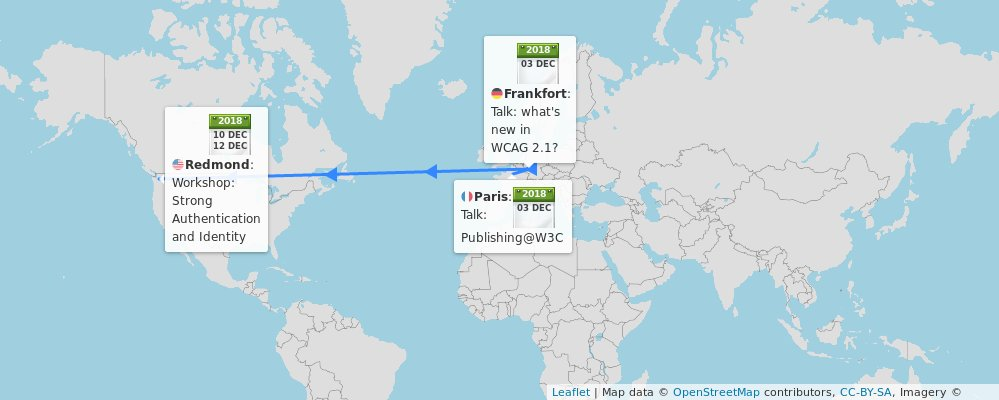

üóìÔ∏è December@w3c: conferences, workshop, etc. https://www.w3.org/participate/eventscal.html
Dec. 3: @ivan_herman, @lmrlaurent and Daihei Shiohama present the @w3cpublishing work at the "Assises du Livre num√©rique" event @SNEedition, in #Paris üá´üá∑ https://www.sne.fr/evenement_sne/les-10-ans-des-assises-du-livre-numerique/ #EPUB #eBook #livre #numerique
https://twitter.com/w3cdevs/status/1068779882342162432Dec. 3: Eric Eggert @yatil of @wai presents "News in #WCAG21" at the @DB_Bahn "Digital Accessibility - Eliminating Barriers through Technology" event, in #Frankfurt üá©üá™ #a11y #accessibility. Register at https://www.eventbrite.de/e/digitale-barrierefreiheit-durch-technik-barrieren-beseitigen-tickets-52080012720 @DB_Skydeck @dbsystel #RheinMainRocks
https://twitter.com/w3cdevs/status/1068779886725263361Dec. 3: Eric Eggert @yatil @wai pr√§sentiert "News in #WCAG21" bei der @DB_Bahn "Digital Accessibility - Eliminating Barriers through Technology" veranstaltung, in #Frankfurt üá©üá™ #a11y #accessibility. Hier anmelden: https://www.eventbrite.de/e/digitale-barrierefreiheit-durch-technik-barrieren-beseitigen-tickets-52080012720 @DB_Skydeck @dbsystel #RheinMainRocks

https://twitter.com/w3cdevs/status/1068779889208250373... Find out more about the workshop's agenda https://www.w3.org/Security/strong-authentication-and-identity-workshop/schedule.html and its context: https://twitter.com/w3cdevs/status/1061972975690366978
https://twitter.com/w3cdevs/status/1068779894992224256Dec. 10-11: #W3CWorkshop on Strong #Authentication and #Identity, in Redmond, #Seattle üá∫üá∏ hosted by @microsoft @azuread https://www.w3.org/Security/strong-authentication-and-identity-workshop/
https://twitter.com/w3cdevs/status/1068779893570371584Election time üó≥Ô∏è for the @w3c Technical Architecture Group @w3ctag!
If you want a refresher on what is the TAG: https://twitter.com/w3cdevs/status/957974903122219008
Three seats are up for election and four people have been nominated as candidates: Alice Boxhall from @googlechrome, Travis Leithead from @microsoft, Sangwhan Moon from Odd Concepts, and Theresa O'Connor from @apple
https://twitter.com/w3cdevs/status/1069947401056804864Travis Leithead (@TravisLeithead) promotes the need for ever more reviews of specifications and documents produced by @w3c #WorkingGroups and #CommunityGroups
https://twitter.com/w3cdevs/status/1069947406173827074Alice Boxhall's (@sundress) interests are focused on anchoring Web architecture in #accessibility #a11y: “I believe that the TAG is in a unique position to gently influence the direction of the web towards greater accessibility by default”
https://twitter.com/w3cdevs/status/1069947404852584448Each of the four candidates have posted statements about their candidature https://www.w3.org/2018/12/03-tag-nominations
https://twitter.com/w3cdevs/status/1069947403543998464The @w3c membership elects the @w3ctag members (election open until üóìÔ∏è4 January 2019) - the results will be announced around mid-January. Stay tuned!
https://twitter.com/w3cdevs/status/1069947409617293312Theresa O'Connor (@hober) wants to work on ensuring “the long term viability and flourishing of the Web”, by ensuring among other things its wide applicability, e.g. in @w3cpublishing efforts, and good ongoing collaboration with @whatwg
https://twitter.com/w3cdevs/status/1069947408463872000Sangwhan Moon (@sangwhanmoon) is an active contributor to #WebStandards and is helping #inclusion of Korean, Japanese and Asian Web communities to be engaged in W3C's work
https://twitter.com/w3cdevs/status/1069947407306289152The @w3c BD Comics Manga Community Group is indeed open to all to join “to study and document, for all kinds of visual narratives expressed digitally, a common conceptual model and associated sets of controlled values” https://www.w3.org/community/bdcomacg/ https://twitter.com/lmrlaurent/status/1069956095953829888
https://twitter.com/w3cdevs/status/1069961248496910336As many other in tech, the @W3C community has a #diversity issue to address.
@LeonieWatson shares in this video what the #CommunityGroup she created earlier this year hopes to do in this space
https://vimeo.com/303668138
This Community Group started as the W3C Women #CommunityGroup, and got recently rebranded as the #Inclusion and #Diversity #CommunityGroup to broaden its scope.
https://www.w3.org/community/w3c-women/2018/11/21/call-for-participation-in-the-w3c-inclusion-and-diversity-community-group/
https://twitter.com/w3cdevs/status/1069992880519942150Some groups in W3C have developed and are experimenting with complementary rules for their #CodeOfConduct, e.g. recently the #ImmersiveWeb Working Group https://immersive-web.github.io/homepage/code-of-conduct.html
https://twitter.com/w3cdevs/status/1069992884454199301The work of this group is expected to be complementary to other efforts @w3c'>@w3c started over the year such as the Positive Work Environment Community Group that develops and maintains the global @w3c'>@w3c #CodeofConduct
https://www.w3.org/blog/2018/09/positive-work-environment-community-group/
https://twitter.com/w3cdevs/status/1069992883237937153The @tag has also asked (via its chair @torgo) that its composition be more diverse, asking the w3c membership to pay attention to that criteria when offering candidates to the TAG election http://slides.com/torgo/tag-update-acberlin-05-2018#/0/11
https://twitter.com/w3cdevs/status/1069992888405254145This led to the set up of a TPAC diversity scholarship which the first
few people benefited from at our #w3cTPAC meeting end of October
https://twitter.com/w3c/status/1011697058988941314
https://twitter.com/w3cdevs/status/1069992887037898753The topic of diversity was also a key topic discussed at the W3C membership meeting a few months ago
https://www.w3.org/blog/2018/06/w3c-strategic-highlights-for-spring-2018-and-advisory-committee-meeting/
https://twitter.com/w3cdevs/status/1069992885871931392Thanks to @webcastors for filming this interview, and thanks to @LeonieWatson for accepting to summarize this effort in this impromptu interview! This is a first of a series of short interview we captured during #w3cTPAC this year, stay tuned for more!
https://twitter.com/w3cdevs/status/1069992892423380992If you are interested in helping, the Inclusion and Diversity Community Group is open to all to join https://www.w3.org/community/w3c-women/
https://twitter.com/w3cdevs/status/1069992891135811584.@LeonieWatson covers in this video some of the other ideas in this space, including collaboration with @GirlsWhoCode or the Grace Hopper Celebration #GHC18 https://vimeo.com/303668138
https://twitter.com/w3cdevs/status/1069992889810411521If you want to help make Web pages more pronounceable, a @w3c task force is starting to look at this. https://twitter.com/theA11Y/status/1070654681175728129
Among other inputs to the work, an exploration of bringing SSML into HTML would help provide indications on pronunciation of HTML pages:
https://github.com/mhakkinen/SSMLinHTMLproposal
https://twitter.com/w3cdevs/status/1070710412050612225This is obviously helpful for assistive technologies #accessibility, but this may also be of interest e.g. for voice assistants? Maybe something for the Voice Assistant Standardization #CommunityGroup /cc @edent https://www.w3.org/community/voice-assistant/
https://twitter.com/w3cdevs/status/1070710414655275010A key aspect to giving input and feedback on a @w3c spec is … to be able to find the right spec - @rachelandrew explains it all for #CSS https://twitter.com/24ways/status/1073367216559673344
https://twitter.com/w3cdevs/status/1073478325094543360A reminder about where the SVG2 spec is at https://twitter.com/svgeesus/status/1026846936236740608

The proposed new charter for the @svgwg suggests to focus its work on stabilization and interoperability testing of the core SVG 2 specification towards its finalization
https://www.w3.org/Graphics/SVG/svg-2019-ac.html https://twitter.com/w3c/status/1073508917253156864
https://twitter.com/w3cdevs/status/1074695075479859200To continue the work on other features that would not pass the mark in terms of interoperability in the short term, the proposal on the table is to have a companion #CommunityGroup to incubate these ideas further https://www.w3.org/community/
https://twitter.com/w3cdevs/status/1074695077597990914Congrats to editors Joanmarie Diggs, @BryanEGaraventa and Michael Cooper of @wai for the newly published @w3c #WebStandard #WAI_ARIA #accessibility #a11y #timetoadopt https://twitter.com/w3c/status/1074935116957388800
https://twitter.com/w3cdevs/status/1074941537619009536Last week, the #WebRTC Working Group published its first release of its use cases for the next version of WebRTC https://twitter.com/dret/status/1072423944383328256
#WebRTC is already widely used to power videoconferences and collaboration systems, in Web browsers and in other ecosystems (e.g. native apps). But its use has expanded beyond that initial core, leading to needs for more features and more optimizations.
https://twitter.com/w3cdevs/status/1014175796758503424
https://twitter.com/w3cdevs/status/1075032865027563521The concrete work on APIs to support these new use cases has already started, but is still in its very early phase https://www.w3.org/2011/04/webrtc/wiki/NV_Documents.
https://twitter.com/w3cdevs/status/1075032869771378695The use cases document highlight some of these needs: improved performance for gaming, mobility, video conferencing, file sharing, #IoT; improved support for processing audio and video feeds e.g. for #MachineLearning.

https://twitter.com/w3cdevs/status/1075032867791605761The #WebRTC Working Group is still iterating on these use cases, to make sure they understand the full range of needs and their priorities.
If you want to chime in, head to the github repo! https://github.com/w3c/webrtc-nv-use-cases/
https://twitter.com/w3cdevs/status/1075032872237625350You can hear from @juberti on what @google sees as exciting opportunities in #WebRTC NV on a talk he gave recently
https://www.youtube.com/watch?v=gV354kWh08o&feature=youtu.be&list=PL4_h-ulX5eNfaM0QM5r-PewWaY_zgLH7b&t=1226
https://twitter.com/w3cdevs/status/1075032870912253953For our French-reading followers: a report from two participants to this year #w3cTPAC with an introduction to what participation to W3C groups looks like https://twitter.com/access42net/status/1075390298010869760
https://twitter.com/w3cdevs/status/1075413250639060992Progressive font enrichment enables to download only a subset of the font you need, particularly useful in languages and scripts that require lots of glyphs https://twitter.com/w3cdevs/status/981906698813222913
The Web Fonts Working Group is restarting its work under a new charter to work on progressive font enrichment https://www.w3.org/Fonts/WG/webfonts-2018.html https://twitter.com/w3c/status/1073539111468916736
https://twitter.com/w3cdevs/status/1075417017866440707